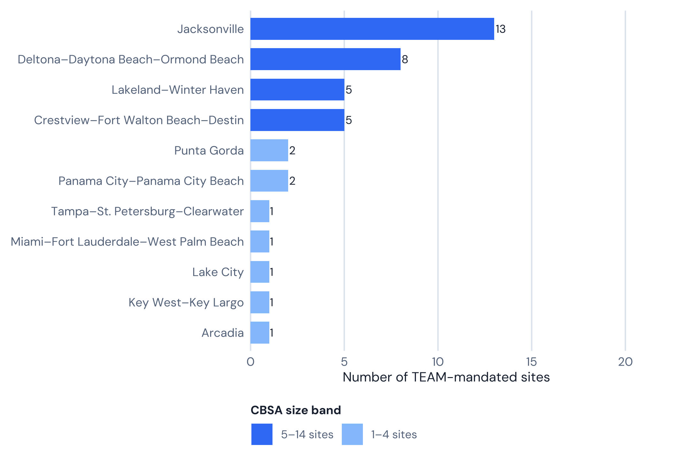
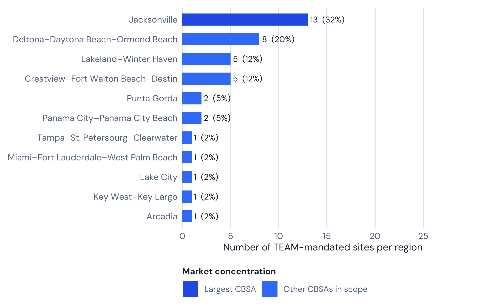

| Signal | Value | Why it matters |
|---|---|---|
| Mandated hospitals | 40 | Most geographically dispersed major TEAM state |
| CBSAs | 11 | Largest CBSA: Jacksonville ( 13 hospitals) |
| Medicare beneficiaries | Not computed in this pipeline | Covered-lives scale |
| HRRP (all conditions) | 61.4% vs 48.1% national | Readmission pressure under episode accountability |
| Est. annual LEJR | Not published at hospital level | Volume concentration |
CMS TEAM in Florida: 40 Mandated Hospitals Across 11 Markets, from Jacksonville to the Keys
Florida’s 40 TEAM-mandated hospitals post a real, sizable readmissions gap versus the national rate — but not the one the original headline claimed. Verified against live CMS data, including the heart-attack readmissions gap that turns out to be the state’s actual outlier finding.

White paper
CMS TEAM in Florida: 40 Mandated Hospitals Across 11 Markets, from Jacksonville to the Keys
40 mandated hospitals · 11 CBSAs · before PY2 (2027)
Rainfall white paper · Narration
Listen while you read
Methodology. Hospital counts, CBSA breakdowns, figures 1–2, and the readmissions comparison recompute on render from vendored CMS data (the TEAM participant list and HRRP dataset 9n3s-kdb3, joined by CCN). Episode-dollar and Medicare-population figures are not invented here; where this repo has no verified source, the report says so rather than repeating an unsourced estimate.
01 · At a glance
Live hospital counts come from the vendored CMS TEAM participant list. The HRRP row below is computed at render time from the CMS HRRP dataset (9n3s-kdb3) joined to this scope’s roster by CCN; Medicare-population and per-episode LEJR figures are not published at hospital level, so this report states that rather than estimating them.
02 · Where the mandate sits
Largest market in this scope: Jacksonville (13 hospitals).

| CBSA | Hospitals | Share (%) |
|---|---|---|
| Jacksonville | 13 | 32.5 |
| Deltona–Daytona Beach–Ormond Beach | 8 | 20.0 |
| Crestview–Fort Walton Beach–Destin | 5 | 12.5 |
| Lakeland–Winter Haven | 5 | 12.5 |
| Panama City–Panama City Beach | 2 | 5.0 |
| Punta Gorda | 2 | 5.0 |
| Arcadia | 1 | 2.5 |
| Key West–Key Largo | 1 | 2.5 |
| Lake City | 1 | 2.5 |
| Miami–Fort Lauderdale–West Palm Beach | 1 | 2.5 |
| Tampa–St. Petersburg–Clearwater | 1 | 2.5 |

03 · Guide narrative (from the website TEAM report)
Takeaways
- 40 hospitals across 11 CBSAs — the most geographically dispersed major TEAM state roster
- Jacksonville is the largest market: 13 hospitals
- AdventHealth dominates the Deltona–Daytona Beach and Lakeland–Winter Haven clusters
- Florida’s HRRP excess-readmission rate is 61.4% vs 48.1% nationally — a real, large gap, roughly in line with the “fifth-highest” ranking that circulates, though that ranking is noisier than it sounds once every TEAM state is checked
- Florida does not have a favorable hip/knee replacement story — the state runs close to national parity on that condition. The real outlier is heart attack (AMI) readmissions, where Florida’s rate is nearly 1.7 times the national rate, the largest single-condition gap found in any state analyzed this cycle
Florida’s TEAM mandate: scale, geography, and demographic stakes
With 40 hospitals across 11 Core-Based Statistical Areas, Florida’s CMS TEAM mandate is geographically the most dispersed of any major TEAM state. The state stretches more than 500 miles from the Florida Panhandle’s Gulf Coast to the Florida Keys; its mandated CBSAs span distinct care markets with different health system configurations, patient populations, and post-acute landscapes. This geographic diversity makes Florida an unusually instructive case study in how TEAM impacts markets ranging from dense urban academic centers (Jacksonville’s UF Health and Mayo Clinic) to resort-adjacent community hospitals (Lower Keys Medical Center) and suburban multi-hospital systems (AdventHealth’s Daytona and Lakeland clusters).
CMS does not publish hospital-level Medicare-population or TEAM episode-volume figures, so this report does not carry a Florida-specific beneficiary count or LEJR episode estimate the way an earlier version of this briefing did — doing so would mean presenting an invented number as Florida data.
Fast facts
- 40 hospitals mandated across 11 CBSAs
- Jacksonville: 13 hospitals — largest Florida TEAM market
- Deltona–Daytona Beach–Ormond Beach: 8 hospitals (primarily AdventHealth)
- Crestview–Fort Walton Beach–Destin: 5 hospitals (primarily HCA Florida)
- Lakeland–Winter Haven: 5 hospitals
- 61.4% of FL hospital-condition pairs exceed HRRP ERR 1.0, vs 48.1% nationally
- Major systems: AdventHealth, UF Health, Baptist Health, HCA Florida, Ascension
Jacksonville: Florida’s largest TEAM market
Jacksonville is Florida’s dominant TEAM market with 13 mandated hospitals. Baptist Health operates multiple campuses in the CBSA (Jacksonville, Beaches, Nassau); UF Health Jacksonville is the academic referral center for northeast Florida, anchoring the state university system’s clinical mission in the region; Mayo Clinic operates its Southeast regional campus in Jacksonville with nationally recognized orthopedic and cardiovascular programs.
Ascension St. Vincent’s operates four hospitals in the Jacksonville CBSA (Riverside, Southside, Clay County, St. Johns County) — a network-within-a-network that gives the Catholic health system coordinating leverage across suburban markets to the south and west. The HCA Florida presence (Memorial, Orange Park) rounds out the for-profit segment.
AdventHealth and HCA: system dominance in Florida TEAM markets
AdventHealth — the Seventh-day Adventist Health System — has the largest single-system footprint in Florida’s TEAM mandate, operating facilities across multiple CBSAs, most heavily in the Deltona–Daytona Beach CBSA (the largest AdventHealth cluster in scope) and the Lakeland–Winter Haven CBSA, with an additional facility in the Punta Gorda CBSA (AdventHealth Port Charlotte). This infrastructure should, in theory, position AdventHealth favorably under TEAM by enabling systemwide episode cost monitoring and standardized discharge protocols — though, as the readmissions section below shows, that theoretical advantage does not show up as a favorable readmissions gap for Florida overall.
HCA Florida (the Florida division of HCA Healthcare) similarly spans multiple CBSAs: Crestview–Fort Walton Beach–Destin (Fort Walton-Destin Hospital, Twin Cities Hospital), Panama City (Gulf Coast Hospital), Punta Gorda (Fawcett Hospital), and Lake City (Lake City Hospital). HCA Healthcare’s national episode-management experience, including with the predecessor BPCI Advanced program, gives its Florida facilities data infrastructure that smaller independent competitors may lack.
Small-market and rural hospitals: the Panhandle and South Florida
Florida’s geographic diversity extends TEAM’s reach into markets that challenge the model’s standard post-acute coordination assumptions. Lower Keys Medical Center — the only hospital in the Florida Keys and Monroe County’s sole acute care facility — serves a highly seasonal population with limited local SNF options, where post-acute placement requiring institutional care often necessitates transport to mainland Florida or Miami-Dade.
DeSoto Memorial Hospital in Arcadia and the Lake City market similarly sit in less-resourced areas where post-acute options are more limited than in Florida’s larger metros, and where TEAM’s 30-day coordination requirements test the capacity of small case management teams. CMS’s risk adjustment framework partially accounts for geographic access constraints, but the structural challenge of managing a 30-day episode across limited rural resources is genuinely different from urban market TEAM management. None of this is verified against hospital-level cost data in this report; it is offered as market context, not a finding about any specific hospital’s performance.
Complete hospital directory by CBSA
The following table lists every CMS TEAM-mandated hospital in Florida, organized by Core-Based Statistical Area, generated at render time from the same live roster used for the counts above — so it cannot drift out of sync with them or omit a participant.
| CBSA | Hospitals | Hospitals in this CBSA |
|---|---|---|
| Jacksonville | 13 | Ascension St Vincent’s Clay County · Ascension St Vincent’s Riverside · Ascension St Vincent’s Southside · Ascension St Vincent’s St Johns County · Baptist Medical Center - Beaches · Baptist Medical Center - Nassau · Baptist Medical Center Jacksonville · Ed Fraser Memorial Hospital · Flagler Hospital · Hca Florida Memorial Hospital · Hca Florida Orange Park Hospital · Mayo Clinic · Uf Health Jacksonville |
| Deltona–Daytona Beach–Ormond Beach | 8 | Adventhealth Daytona Beach · Adventhealth Deland · Adventhealth Fish Memorial · Adventhealth New Smyrna Beach · Adventhealth Palm Coast · Adventhealth Palm Coast Parkway · Halifax Health /Uf Health Medical Center of Delton · Halifax Health Medical Center |
| Crestview–Fort Walton Beach–Destin | 5 | Hca Florida Fort Walton-Destin Hospital · Hca Florida Twin Cities Hospital · North Okaloosa Medical Center · North Walton Doctors Hospital · Sacred Heart Hospital on the Emerald Coast |
| Lakeland–Winter Haven | 5 | Adventhealth Heart of Florida · Adventhealth Lake Wales · Bartow Regional Medical Center · Lakeland Regional Medical Center · Winter Haven Hospital |
| Panama City–Panama City Beach | 2 | Ascension Sacred Heart Bay · Hca Florida Gulf Coast Hospital |
| Punta Gorda | 2 | Adventhealth Port Charlotte · Hca Florida Fawcett Hospital |
| Arcadia | 1 | Desoto Memorial Hospital |
| Key West–Key Largo | 1 | Lower Keys Medical Center |
| Lake City | 1 | Hca Florida Lake City Hospital |
| Miami–Fort Lauderdale–West Palm Beach | 1 | Keralty Hospital |
| Tampa–St. Petersburg–Clearwater | 1 | Morton Plant Hospital |
(Source: Centers for Medicare & Medicaid Services (2026). TEAM participant list.)
Readmissions and TEAM financial exposure in Florida
Joining Florida’s live TEAM roster to the CMS HRRP dataset (9n3s-kdb3, performance period 07/01/2021–06/30/2024) by CCN, 39 of Florida’s 40 mandated hospitals appear in the HRRP file. Across those hospitals’ condition pairs, 61.4% exceed the excess readmission ratio (ERR) threshold of 1.0, against 48.1% nationally. That is a real, sizable gap — larger than the figure that has previously circulated for Florida, which understated the true readmissions story here.
The “fifth-highest nationally” framing that circulates for Florida is directionally reasonable once every TEAM-participating state is checked, but it deserves the same caveat this report applies elsewhere: a handful of states with very small TEAM rosters — Indiana (6 hospitals, 74.1%), Georgia (13 hospitals, 64.9%), Missouri (6 hospitals, 63.0%) — post higher pooled rates than Florida, but those numbers come from far fewer hospitals and are correspondingly noisier. Among states with a large, meaningful TEAM roster, Florida’s 61.4% lands just behind New Jersey’s, making Florida the second-worst readmissions profile of any large-roster TEAM state this analysis has checked.
Unlike New York or Massachusetts, Florida does not have a favorable hip/knee replacement story to offset the rest of its readmissions profile. Florida’s hip and knee replacement ERR sits close to national parity: 45% of Florida hip and knee pairs exceed the threshold, against 47.9% nationally — essentially even, not a favorable split. Hip/knee replacement is a general HRRP condition with a comparatively high average ERR nationally, but that is a national fact about the condition, not something specific to Florida, and it is not what drives Florida’s number.
The real outlier is heart attack (AMI): 82.8% of Florida’s heart-attack pairs exceed the threshold, against 49.7% nationally — a gap of roughly 1.7x the national rate, the largest single-condition gap this analysis has found in any state checked so far. Florida also runs meaningfully worse than the national rate on CABG (68.8% vs 49.9%), heart failure (56.8% vs 48.9%), and COPD (68.6% vs 47.2%), and is close to national parity on pneumonia (48.7% vs 46.8%).
Florida’s demographic profile is a plausible contributor: Florida has long been a Medicare-heavy state, with an older, higher-acuity beneficiary population than most states, and a post-acute sector that varies widely in density between urban markets (Jacksonville) and smaller resort or retirement markets (Punta Gorda, Key West) where post-acute options are more geographically constrained. CMS does not publish hospital-level Medicare-population figures, so this report does not attach a specific beneficiary count to that intuition; it is offered as context, not a verified driver of the AMI gap specifically.
For TEAM purposes, the practical implication is that Florida’s readmissions risk does not concentrate where TEAM’s core procedure category (hip/knee replacement) sits — it concentrates in the medical conditions HRRP already tracks, especially heart attack care. A Florida hospital assessing its own TEAM exposure should not assume its LEJR readmissions profile is representative of its overall risk under episode accountability.
(Source: Centers for Medicare & Medicaid Services. HRRP supplemental data, Dataset 9n3s-kdb3. — vendored copy joined to the CMS TEAM participant list by CCN for this report.)
What this analysis does not estimate
CMS does not publish hospital-level TEAM episode volumes or target prices in a form this repo can join to the Florida roster, so this report does not model a Florida-specific episode count, target price, or gain/loss dollar figure. An earlier version of this briefing estimated a specific annual LEJR episode count across Florida’s TEAM cohort and projected a multi-million-dollar aggregate savings figure from a hypothetical shift from SNF to home health — that episode count and the dollar figures built on it were not sourced from any CMS data this repo carries, and this report does not repeat them.
Optum Advisory (2025) projected that 56% of TEAM-mandated hospitals nationally will lose money once downside risk begins in Performance Year 2, averaging $1.2 million per facility — a national estimate, not a Florida-specific one, and its underlying methodology isn’t public. The Healthcare Financial Management Association (2026) similarly frames 2026 as a preparation year for TEAM hospitals generally, without a Florida-specific figure. Given Florida’s readmissions profile, particularly on heart attack care, that national risk is plausibly more acute here than the average state, but this report does not attach a number to that intuition. A hospital that wants an actual dollar estimate needs its own CMS-issued target price file, obtained through the TEAM participant portal.
The most effective intervention documented in the research base, per Dummit et al. (2016) and Finkelstein et al. (2021), is reducing discharge to institutional post-acute care (IRFs and SNFs) in favor of home health for clinically appropriate patients. That evidence base is specific to lower extremity joint replacement, the condition where Florida is closest to national parity — it is not necessarily the right lever for Florida’s actual outlier finding on heart attack readmissions, which is a medical, not surgical, condition with a different post-discharge care pathway.
(Source: Dummit et al. (2016), JAMA 316(12).) (Source: Finkelstein et al. (2021), JAMA 325(18).)
Frequently asked questions
How many Florida hospitals are mandated for CMS TEAM?
40 Florida hospitals are mandated to participate in CMS TEAM across 11 CBSAs, per the March 2026 CMS participant list.
Which Florida city has the most TEAM-mandated hospitals?
Jacksonville leads with 13 hospitals in the Jacksonville, FL CBSA — the largest single-city TEAM market in Florida.
Is the Mayo Clinic in Jacksonville part of CMS TEAM?
Yes. Mayo Clinic’s Jacksonville campus is on the CMS TEAM participant list in the Jacksonville, FL CBSA.
Are Miami hospitals required to participate in CMS TEAM?
Most of the Miami–Fort Lauderdale–West Palm Beach metro was not selected as a TEAM CBSA. Only one hospital in that CBSA is on the Florida roster. The Miami-Dade and Broward markets are largely excluded from the TEAM mandate.
What is Florida’s HRRP readmission rate?
61.4% of Florida’s hospital-condition pairs exceed the HRRP excess readmission ratio (ERR) threshold of 1.0, against 48.1% nationally, in the CMS HRRP dataset joined to Florida’s live TEAM roster by CCN. That is roughly the “fifth-highest nationally” ranking that circulates for Florida, and among states with a large TEAM roster it is second only to New Jersey. It is not driven by hip/knee replacement, where Florida is close to national parity — the largest gap is on heart attack (AMI) readmissions.
References
- Centers for Medicare & Medicaid Services. (2026). TEAM participant list (March 2026 update). CMMI. https://www.cms.gov/priorities/innovation/innovation-models/team-model
- Centers for Medicare & Medicaid Services. (2024, August). Transforming Episode Accountability Model: Final Rule. Federal Register, 89(166), 68986–69178. https://www.federalregister.gov/documents/2024/08/28/2024-17021/medicare-program-hospital-inpatient-prospective-payment-systems
- Centers for Medicare & Medicaid Services. (2024). Hospital Readmissions Reduction Program (HRRP) FY2025 supplemental data [Data set]. CMS Provider Data Catalog, Dataset 9n3s-kdb3. https://data.cms.gov/provider-data/dataset/9n3s-kdb3
- Dummit, L. A., Kahvecioglu, D., Marrufo, G., Rajkumar, R., Marshall, J., Tan, E., Le, S. T., Terebelo, S., Hearld, L., Xian, Y., Morishima, C., Pittman, P., Barzee, B., & Conway, P. H. (2016). Association between hospital participation in a Medicare bundled payment initiative and payments and quality outcomes for lower extremity joint replacement episodes. JAMA, 316(12), 1267–1278. https://doi.org/10.1001/jama.2016.12717
- Finkelstein, A., Ji, Y., Mahoney, N., & Skinner, J. (2021). Mandatory Medicare bundled payment program for lower extremity joint replacement and discharge to institutional postacute care. JAMA, 325(18), 1879–1890. https://doi.org/10.1001/jama.2021.5684
- Zuckerman, R. B., Sheingold, S. H., Orav, E. J., Ruhter, J., & Epstein, A. M. (2016). Readmissions, observation, and the Hospital Readmissions Reduction Program. New England Journal of Medicine, 374(16), 1543–1551. https://doi.org/10.1056/NEJMsa1513024
- American College of Surgeons. (2024). Transforming Episode Accountability Model (TEAM): ACS position and analysis. https://www.facs.org/advocacy/transforming-episode-accountability-model/
- Healthcare Financial Management Association. (2026, March). Hospitals can use 2026 to prepare for CMS TEAM bundled payment risk. HFMA. https://www.hfma.org/payment-reimbursement-and-managed-care/hospitals-can-use-2026-to-prepare-for-cms-team-bundled-payment-risk
Disclaimer. Rainfall Health is not a hospital, health system, or health care provider. This paper is prepared by health care industry professionals, not clinicians, and does not constitute clinical, legal, financial, or regulatory advice. Roster counts and readmission figures are computed from the CMS files cited above; this paper does not assess, rate, or make claims about the quality of care provided by any individual hospital or organization.